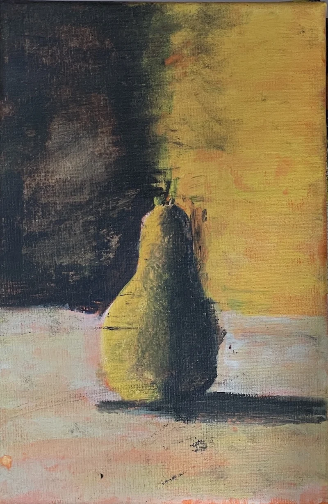

HGOD · Originalwerk · Unikat
Das erste gemalte Werk von H.G.O. Dillenberg. First paint — c time: der Nullpunkt, ab dem alles Weitere gezählt wird.
Eine einzelne Frucht, frontal, fast lebensgroß — und mitten durch das Bild läuft die Grenze: links Dunkel, rechts Ockergelb, dazwischen die Frucht, die beides zugleich ist. Der Schatten fällt nicht hinter das Motiv, er gehört zum Motiv. Daher der Titel.
„Schatten-Obst" ist das erste gemalte Bild des Künstlers — kein Jugendwerk aus dem Archiv, sondern der dokumentierte Anfang. In der Logik von Dateisystemen wäre es die creation time des Gesamtwerks: alles, was danach kommt, referenziert dieses Bild. Der Preis bewertet nicht die Leinwand, sondern die Position — Nullpunkte gibt es pro Werk genau einen.
A single fruit, frontal, almost life-size — and straight through the picture runs the divide: darkness on the left, ochre yellow on the right, and between them the fruit, belonging to both at once. The shadow doesn't fall behind the subject; it is part of it. Hence the title.
"Schatten-Obst" (Shadow Fruit) is the artist's first painting — not an early piece retrieved from some archive, but the documented beginning. In file-system terms, it is the creation time of the entire body of work: everything that follows references this canvas. The price does not value the canvas; it values the position — every œuvre has exactly one origin.